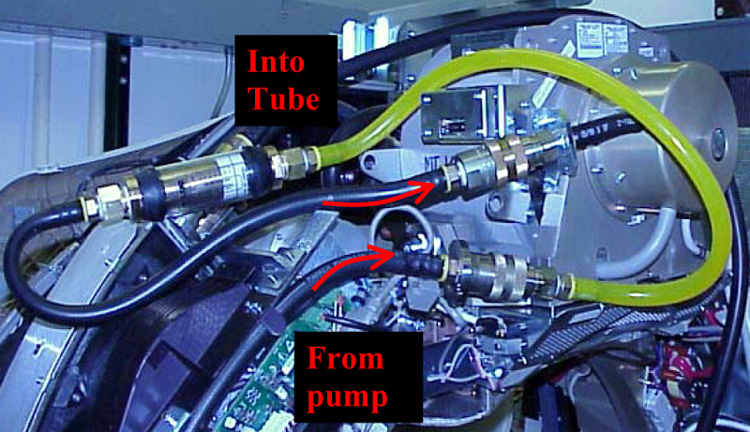
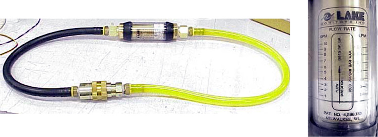

Operating Documentation
Direction 5196839-800, Rev# 6
RT16 and Xtra Service Info Adv
Operating Documentation |
| Required Persons | Preliminary Reqs | Procedure | Finalization |
|---|---|---|---|
| 1 | Timing Not Applicable | 15 mins |
This procedure is used in concert with the Hercules Coolant Air Removal Procedure. This procedure checks for the proper flow rate in oil based coolant systems only. Low flow rate is an indicator of possible air in the coolant system or a faulty oil pump. Unusual Image Artifacts, tube over-temperature errors, or noisy oil pump are symptoms of flow related problems.
Coolant Air Removal Procedure
Heat Exchanger Compensation (Pro 16 & VCT)
Performed at PM
| Last Revised: | 10 November 2005 |
| Item | Qty | Effectivity | Part# | Manufacturer | |
|---|---|---|---|---|---|
| Flow Meter | 1 | - | 5151781 | - | |
| Hercules Coolant Air Removal Kit (Recommended) | 1 | - | 5151778 | - | |
| Oil Compensation Tool (Recommended) | 1 | - | 5125182 | - | |
| Item | Qty | Effectivity | Part# | Manufacturer |
|---|---|---|---|---|
| Transformer Oil | - | T0552G (1 gallon) | - | |
| Dry Wipes | - | - | - | |
| Latex Gloves (optional) | - | - | - |
| POTENTIAL FOR BURNS. | |
| SEVERE PERSONAL INJURY CAN OCCUR VIA BURNS FROM CONTACT WITH HOT OIL. | |
| Do not service while tube and oil are hot (See required condition, below). |
| Condition | Reference | Eff |
|---|---|---|
No X-Ray exposures have been made for AT LEAST one (1) hour. Tube casing and oil hoses are cool to the touch. | - | - |
Q: Can I use this tool and procedure for water-based coolant systems? A:NO. There is no procedure for water-based cooling systems. Introducing water-based coolant into this tool will require replacement of the Heat Exchanger, Oil Pump, and X-Ray Tube, as a complete set. Additionally, this tool will need to be scrapped. DO NOT contaminate with water-based coolants.
| Potential for Personal Injury or Shock. | |
| An Energized Gantry Presents Mechanical (Rotational) and Electrical Hazards to the Service Engineer. | |
| Ensure That All Three (3) Service Switches Have Been Turned OFF, Prior to Installing the Flow Meter. |
Install the flow meter between the pump outlet and the tube inlet, as shown.
Illustration 1: Properly Installed Flow Meter

Turn ON 120/240 Power on the Service Switch Board.
Measure the oil flow rate, using the black line on the white indicator and aligning it with the left hand scale of the flow meter.
If the flow is equal to or more than 4.0 gpm, the flow is adequate.
If the flow is less than 4.0 gpm, either the pump is malfunctioning, or there is air in the coolant system and the air removal process must be performed (see Hercules Coolant Air Removal Procedure).
Illustration 2: Close-Up of Flow Meter

Turn OFF 120/240 Power on the Service Switch Board.
Remove the flow meter.
Reconnect the quick disconnects, and tighten down the safety collars.
Turn ON 120/240 Power on the Service Switch Board, and listen for oil flow at the pump.
If flow rate is correct, then no finalization is required.
If flow rate is low, then perform the Hercules Coolant Air Removal Procedure